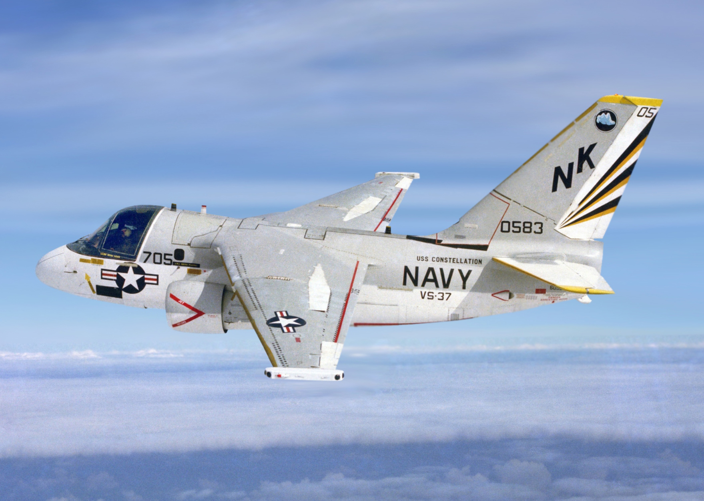

Anti-submarine warfare (ASW) aircraft are specifically designed and equipped to detect, track, and neutralize submarines. These specialized aircraft play a crucial role in maritime operations by providing the capability to detect and engage enemy submarines, thus protecting friendly naval forces and ensuring control of the seas. The primary mission of anti-submarine aircraft is to locate and track submarines in the vast expanse of the ocean. They are equipped with a variety of sensors and systems optimized for detecting underwater targets. These include sonobuoys, which are expendable sonar systems dropped from the aircraft to detect underwater sound signatures, and magnetic anomaly detectors (MAD), which can sense disturbances in the Earth's magnetic field caused by submarines. ASW aircraft also utilize radar and electro-optical sensors to search for surface targets and detect periscopes or snorkels of submerged submarines. These sensors help in locating and identifying potential threats, allowing the aircraft to initiate appropriate anti-submarine measures. Once a submarine is detected, anti-submarine aircraft can employ a range of weapons to neutralize the threat. These can include depth charges, torpedoes, or anti-submarine missiles. Depth charges are explosive devices designed to be dropped from the aircraft and detonated at a predetermined depth, while torpedoes can be launched from the aircraft to strike the submarine. Anti-submarine missiles provide a longer-range option for engaging submarines. To effectively carry out their mission, ASW aircraft are typically equipped with advanced avionics and mission systems. These include sophisticated data processing and analysis capabilities, communication systems for relaying information to other naval assets, and often have an integrated command and control capability to coordinate ASW operations. ASW aircraft may operate independently or as part of a larger anti-submarine warfare network, working in coordination with surface ships, submarines, and other aircraft to locate and neutralize underwater threats. They play a critical role in protecting naval assets, securing sea lanes, and maintaining control over the maritime domain.